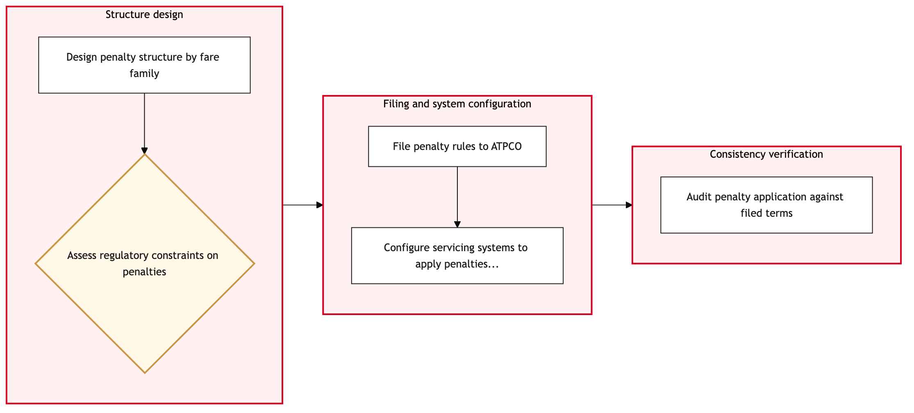

Updated 2026-08-20
Fare Rule and Penalty Structure Design
Process flow
Click to zoom

Process steps
▼
Phase 1 — Market Analysis
5 steps
| Step | Activity | Role | System | Input | Output | KPI | Dec | Exc | Pain point |
|---|---|---|---|---|---|---|---|---|---|
| 1.1 | Conduct market analysis | Revenue Management Analyst | PROS Real-Time Dynamic PricingA | Market data, competitor pricing, demand trends | Pricing strategy document | Completion within 3 business days | N | N | Access to real-time market data can be delayed. |
| 1.2 | Identify potential fare rules | Revenue Management Analyst | PROS Real-Time Dynamic PricingA | Pricing strategy document | List of potential fare rules | Minimum 5 identified rules | Y | N | Complexity in identifying overlapping or conflicting rules. |
| 1.3 | Prioritize fare rules based on revenue impact | Revenue Management Analyst | PROS Real-Time Dynamic PricingA | List of potential fare rules | Prioritized list of fare rules | Top 3 rules selected within 2 hours | N | N | Balancing revenue goals with regulatory constraints. |
| 1.4 | Conduct initial rule design | Revenue Management Analyst | PROS Real-Time Dynamic PricingA | Prioritized list of fare rules | Initial draft of fare rules | Draft completed within 24 hours | N | N | Detailed rule creation can be time-consuming. |
| 1.5 | Review initial draft with stakeholders | Revenue Management Manager | PROS Real-Time Dynamic PricingA | Initial draft of fare rules | Stakeholder feedback document | Feedback received within 48 hours | Y | N | Stakeholders may have conflicting opinions on rule design. |
▼
Phase 2 — Rule Design
3 steps
| Step | Activity | Role | System | Input | Output | KPI | Dec | Exc | Pain point |
|---|---|---|---|---|---|---|---|---|---|
| 2.1 | Prepare regulatory compliance checklist | Legal Counsel | PROS Revenue ManagementB | Initial draft of fare rules | Regulatory compliance checklist | Checklist completed within 1 business day | N | Y | Inconsistent interpretation of regulations. |
| 2.2 | Review fare rules against regulatory requirements | Legal Counsel | PROS Revenue ManagementB | Regulatory compliance checklist | Compliance report | Report completed within 2 business days | N | N | Complexity in navigating regulatory nuances. |
| 2.3 | Revise fare rules to meet compliance requirements | Revenue Management Analyst | PROS Real-Time Dynamic PricingA | Compliance report | Revised fare rules | Revisions completed within 48 hours | Y | N | Ensuring full regulatory compliance can be challenging. |
▼
Phase 3 — Regulatory Compliance Check
4 steps
| Step | Activity | Role | System | Input | Output | KPI | Dec | Exc | Pain point |
|---|---|---|---|---|---|---|---|---|---|
| 3.1 | Develop implementation plan | Revenue Management Manager | PROS Revenue ManagementB | Revised fare rules | Implementation plan document | Plan completed within 2 business days | N | N | Coordinating with multiple departments for implementation. |
| 3.2 | Identify affected flights and segments | Revenue Management Analyst | PROS Real-Time Dynamic PricingA | Implementation plan document | Affected flight list | List completed within 1 business day | N | Y | Large-scale changes can impact multiple flights. |
| 3.3 | Notify stakeholders of implementation plan | Revenue Management Manager | PROS Revenue ManagementB | Implementation plan document | Stakeholder notification | Notifications sent within 24 hours | N | N | Ensuring all relevant parties are informed. |
| 3.4 | Schedule testing for fare rules | Revenue Management Analyst | PROS Real-Time Dynamic PricingA | Implementation plan document | Test schedule | Testing scheduled within 1 business day | Y | N | Testing must be thorough to avoid errors. |
▼
Phase 4 — Implementation Planning
3 steps
| Step | Activity | Role | System | Input | Output | KPI | Dec | Exc | Pain point |
|---|---|---|---|---|---|---|---|---|---|
| 4.1 | Conduct initial testing of fare rules | Revenue Management Analyst | PROS Real-Time Dynamic PricingA | Test schedule | Initial test results | Tests completed within 2 business days | N | Y | Testing may reveal unexpected issues. |
| 4.2 | Review initial test results | Revenue Management Manager | PROS Real-Time Dynamic PricingA | Initial test results | Test review document | Review completed within 1 business day | N | N | Analyzing test results can be time-consuming. |
| 4.3 | Revise fare rules based on test results | Revenue Management Analyst | PROS Real-Time Dynamic PricingA | Test review document | Revised fare rules | Revisions completed within 2 business days | Y | N | Fixing issues can delay the deployment. |
▼
Phase 5 — Testing & Validation
4 steps
| Step | Activity | Role | System | Input | Output | KPI | Dec | Exc | Pain point |
|---|---|---|---|---|---|---|---|---|---|
| 5.1 | Prepare final testing plan | Revenue Management Analyst | PROS Real-Time Dynamic PricingA | Revised fare rules | Final test plan | Plan completed within 2 business days | N | N | Ensuring comprehensive testing coverage. |
| 5.2 | Conduct final testing of fare rules | Revenue Management Analyst | PROS Real-Time Dynamic PricingA | Final test plan | Final test results | Tests completed within 3 business days | N | Y | Errors may still be found during final testing. |
| 5.3 | Review final test results | Revenue Management Manager | PROS Real-Time Dynamic PricingA | Final test results | Final review document | Review completed within 1 business day | N | N | Analyzing final results can be critical. |
| 5.4 | Revise fare rules based on final test results | Revenue Management Analyst | PROS Real-Time Dynamic PricingA | Final review document | Revised fare rules | Revisions completed within 2 business days | Y | N | Final revisions can be crucial for deployment. |
▼
Phase 6 — Deployment
5 steps
| Step | Activity | Role | System | Input | Output | KPI | Dec | Exc | Pain point |
|---|---|---|---|---|---|---|---|---|---|
| 6.1 | Submit fare rules to ATPCO for filing | Revenue Management Analyst | ATPCOB | Revised fare rules | Fare filing submission | Submission completed within 2 business days | N | Y | ATPCO's latency can slow down the process. |
| 6.2 | Monitor ATPCO filing status | Revenue Management Analyst | ATPCOB | Fare filing submission | Filing status update | Status checked every 4 hours | N | Y | Delays in ATPCO processing can cause bottlenecks. |
| 6.3 | Revise and resubmit fare rules | Revenue Management Analyst | ATPCOB | Filing status update | Resubmitted fare filing | Resubmission completed within 1 business day | Y | N | Errors in initial submission can delay deployment. |
| 6.4 | Deploy revised fare rules to PROS system | Revenue Management Analyst | PROS Real-Time Dynamic PricingA | Resubmitted fare filing | Deployed fare rules | Deployment completed within 2 business days | N | Y | System deployment can encounter technical issues. |
| 6.5 | Escalate filing delay to ATPCO support | Revenue Management Manager | ATPCO SupportU | Filing status update | Support ticket opened | Escalation completed within 1 business day | N | Y | Delays in ATPCO processing require immediate attention. |
Swim lanes
Revenue Management Analyst1.1 1.2 1.3 1.4 2.3 3.2 3.4 4.1 4.3 5.1 5.2 5.4 6.1 6.2 6.3 6.4
Revenue Management Manager1.5 3.1 3.3 4.2 5.3 6.5
Legal Counsel2.1 2.2
Systems touched
PROS Real-Time Dynamic PricingAPROS Revenue ManagementBATPCOBATPCO SupportU
Key performance indicators
- Market analysis completed within 3 days
- Fare rules prioritized within 2 hours
- Regulatory compliance checked within 1 business day
- Implementation plan developed within 2 business days
- Final testing completed within 3 business days
Risks and control points
- Inaccurate market data affecting pricing strategy
- Non-compliance with regulatory requirements leading to legal issues
- Large-scale changes impacting multiple flights
- Errors found during testing delaying deployment
- Delays in ATPCO processing causing bottlenecks
Air Canada Process Wiki — process and systems reference compiled from public sources
for IT Application Management and User Support pre-sales discovery.
Built 2026-08-21. Every system carries an evidence tier: tier C is an industry pattern and tier U is an open
question, and neither should be asserted as fact about Air Canada without confirmation in discovery.
Not affiliated with or endorsed by Air Canada. Air Canada, Aeroplan and Altitude are trademarks of Air Canada.